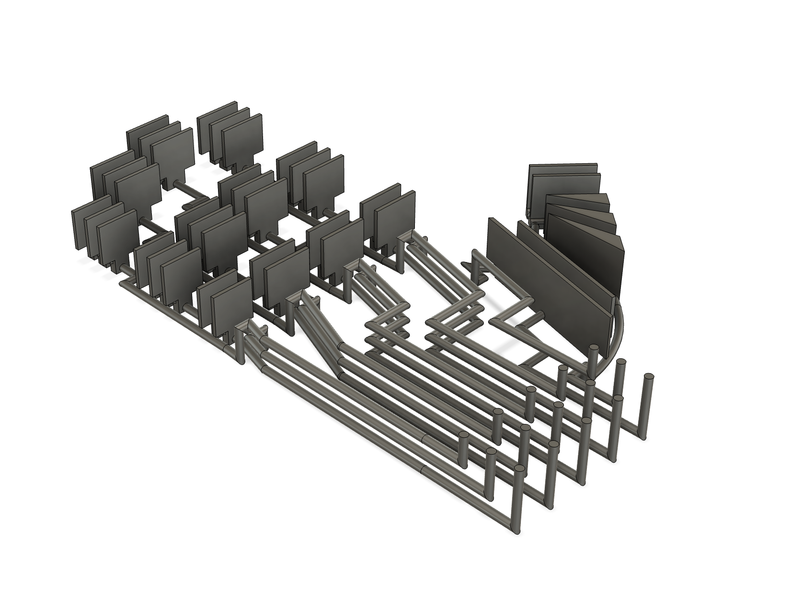

Soft-Bodied Robotics
In the world of soft robotics, many actuators are created using silicone casting. However, silicone casting can be very limiting to design for, and can be very involved/time-consuming to manufacture. However, with the development of 3D printing - especially with softer filaments like TPU - this begs the question if we can create an easier way to manufacture ultra-soft materials that would conventionally be silicone cast.
TPU is a very commonly seen filament in 3D printing, offering a decently wide range of material softness. It is typically seen with shore values of ~60A to 90A. However, shore values can go down as low as 20A, and thus TPU filaments leave a large region of untapped potential. One of the challenges of creating TPU filaments lower than 60A is that its extreme softness makes it difficult to extrude. However, filament is made out of raw pellets, and it's entirely possible to obtain TPU pellets at shore values down to 20A, thus opening the door for creating a printer specialized for ultra-soft materials using these raw pellets that a conventional filament printer would be unable to use.
Currently I am working with PhD student Yijia Wu - who developed a pellet-printer capable of producing these detailed ultra-soft structures - to create structures to test and demonstrate the printer’s capabilities. This includes designing, fabricating, and testing a hand model where each joint is individually controllable using pressurized air through PneuNet actuators.
Model Progression